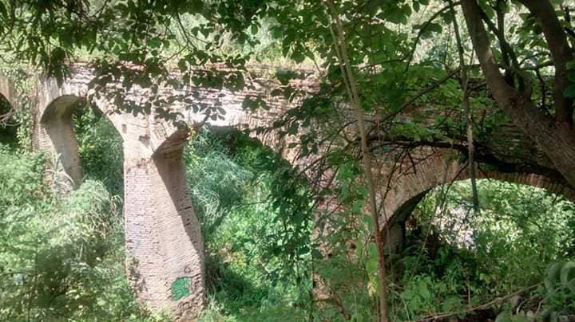
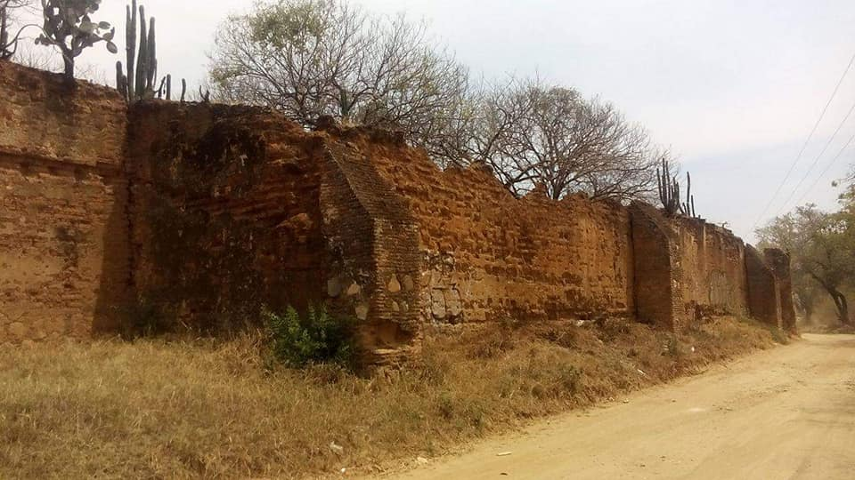
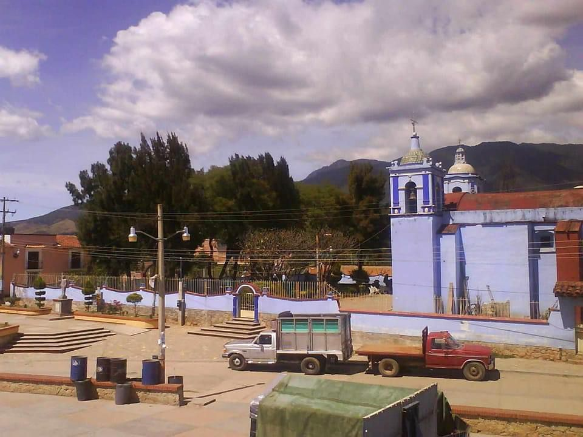
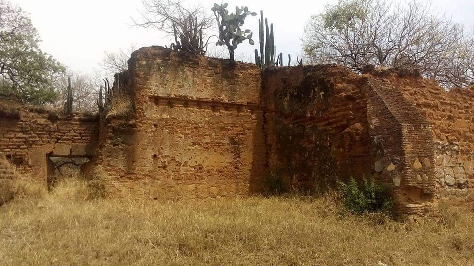
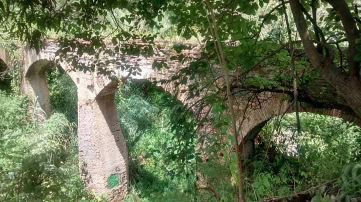
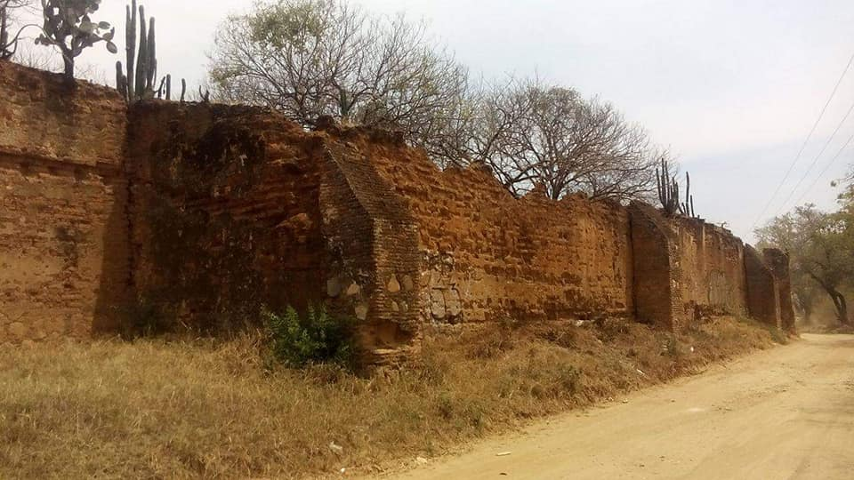
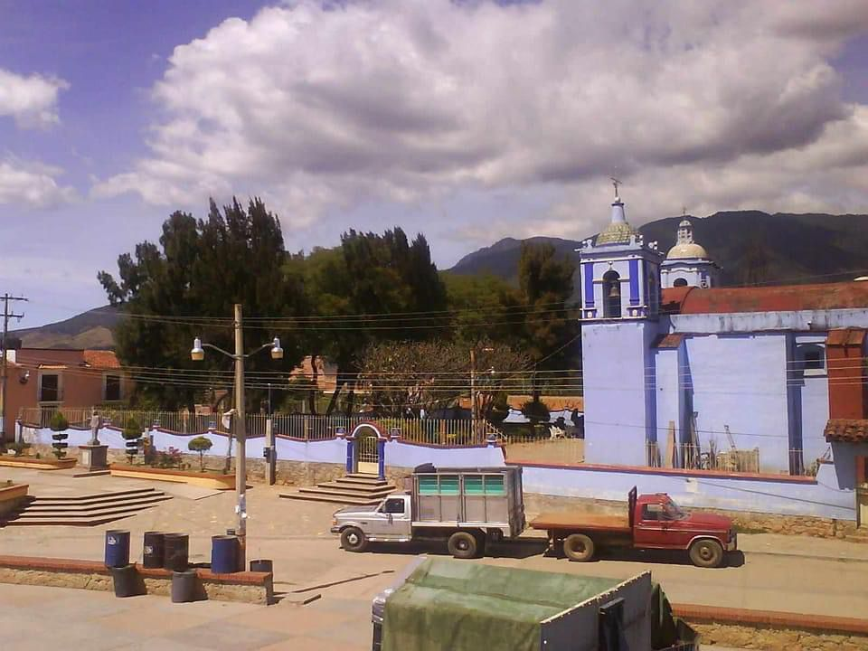
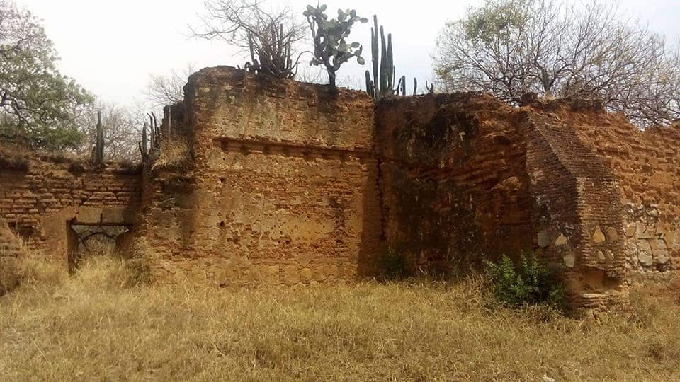

Historia
El pueblo de San Agustín Yatareni fue fundado oficialmente alrededor del año 1700, antes de esa fecha solo existían pequeñas aldeas y Yatareni era una de ellas. En ese momento, los frailes dominicos llegaron a la Nueva España el 23 de junio de 1526 y se encargaron de la evangelización, fundación y construcción de la iglesia del pueblo.Durante la época colonial, en este lugar se encontraba una hacienda de labor donde se cultivaban mangos y duraznos, los cuales eran regados por un sistema hidráulico proveniente del río.
La división de Sierra de Juárez, Oaxaca, se unió a los rebeldes con la firma de un documento a los representantes de Obregón el 3 de mayo de 1920 en Yatareni.
En 1920, se produjo un conflicto entre pueblos. El señor Manuel Santiago, quien en ese momento era presidente municipal, tuvo que intervenir debido a que se querían adueñar de ciertas tierras. Este conflicto resultó en la pérdida de vidas humanas. Manuel Santiago tuvo dos hijos llamados Genaro Santiago Santos y Jacinto Santiago Santos. Genaro Santiago, de 90 años de edad, es reconocido por ser un destacado músico y por poseer conocimiento sobre algunas anécdotas de San Agustín Yatareni. Algunos de sus descendientes todavía siguen su legado.
El terremoto del 7 de septiembre de 2017, de magnitud 8.2, causó daños considerables en la iglesia local y provocó el colapso de uno de los campanarios.